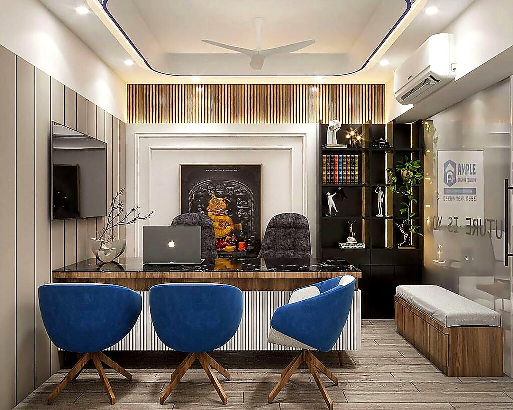
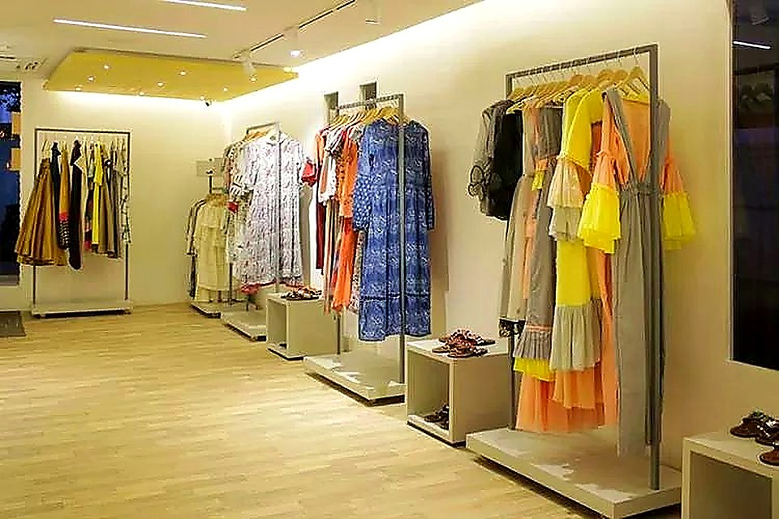
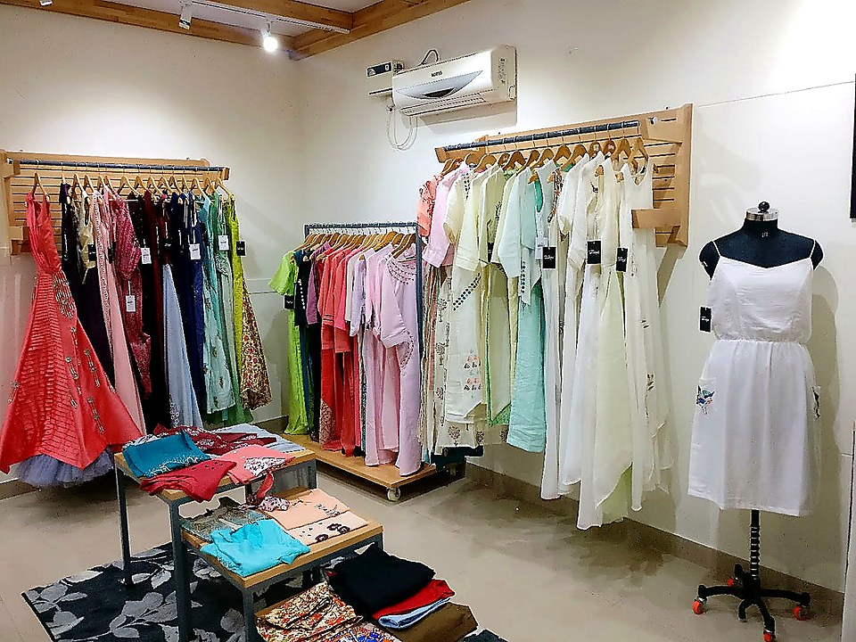

Jay Mataji Creation started with one sewing machine, a rented room in Maninagar, and an order for eleven kurtas that had to be ready by Navratri.
Bhavna Ben had been stitching for a wholesaler for nine years. She knew the work was good and she knew she was being paid for a fraction of it. In 2016 she took the order directly, borrowed against her gold, and delivered all eleven pieces two days early. That customer's sister ordered next, and that is more or less how the business grew for the first three years.
Today there are fourteen of us. Six karigars on embroidery, four on stitching, two on finishing, one on packing, and Bhavna Ben, who still checks every bridal piece before it leaves. We work out of two floors in the same neighbourhood we started in.
We buy fabric in short lengths, which costs more but means we are not stuck making four hundred of anything. Most pieces run to forty units or fewer. Bridal is made one at a time, to measurement, with two fittings before it ships.
We are not trying to be the cheapest. Our cotton kurtas start at ₹1,000 and a bridal gown runs to ₹4,500, and both are priced on what the work actually costs. What we do promise is that if the fit is wrong, we will fix it — length, sleeve, waist — at no charge, before or after delivery.

Twenty-three years at a machine. Cuts every bridal base herself and refuses to let anything ship that she has not checked.

Runs the aari frames. Trained four of our six embroiderers, and has done zardozi since she was fifteen.
Buys in Surat and Bhuj, wash-tests every roll, and is the voice on the phone when you call about an order.
We are open Monday to Saturday, 10am to 8pm. Call before you come and we will keep the pieces you want to see ready on the rail.
Get in touch